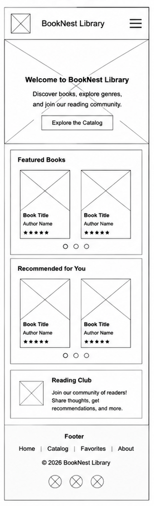
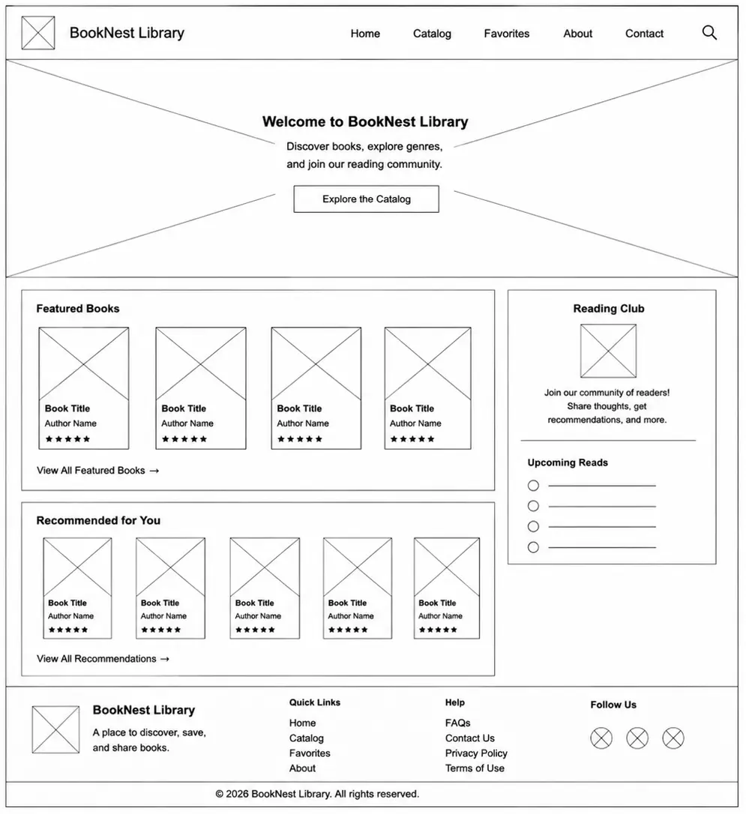

Name
This name represents a welcoming place where readers can discover, save, and enjoy books. The name is simple, memorable, and reflects the purpose of the website.
Purpose
The site provides users with a digital library where they can discover books, browse collections by genre and author, receive reading recommendations, and save their favorite books. The site will offer an interactive and responsive experience using searchable catalogs, filters, and personalized favorites.
Scenarios
- What books are recommended for someone who enjoys fantasy stories?
- How can I search for books by a specific author?
- Which books are currently the most popular among readers?
- How can I browse books by genre without scrolling through the entire catalog?
Color Schema
- Deep Purple (#432454) – Used for headings, navigation, buttons, and other important elements. This color gives the website a professional and inviting appearance.
- Soft Cream (#E5E1EB) – Used for page backgrounds and content sections. This light color improves readability and creates a clean, comfortable reading experience.
- Golden Yellow (#FFD166) – Used as an accent color for highlights, links, hover effects, and featured content. It adds warmth and draws attention to important elements.
Typography
- Merriweather – Used for headings, page titles, and section titles. This serif font gives the website a classic, book-inspired appearance that reflects the reading theme.
- Open Sans – Used for body text, navigation menus, and general content. This sans-serif font is highly readable on both desktop and mobile devices.
- Playfair Display – Used for featured quotes, book recommendations, or special sections to add elegance and visual interest.
Wireframes

